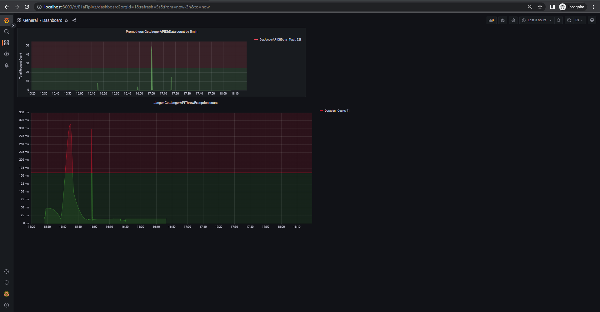
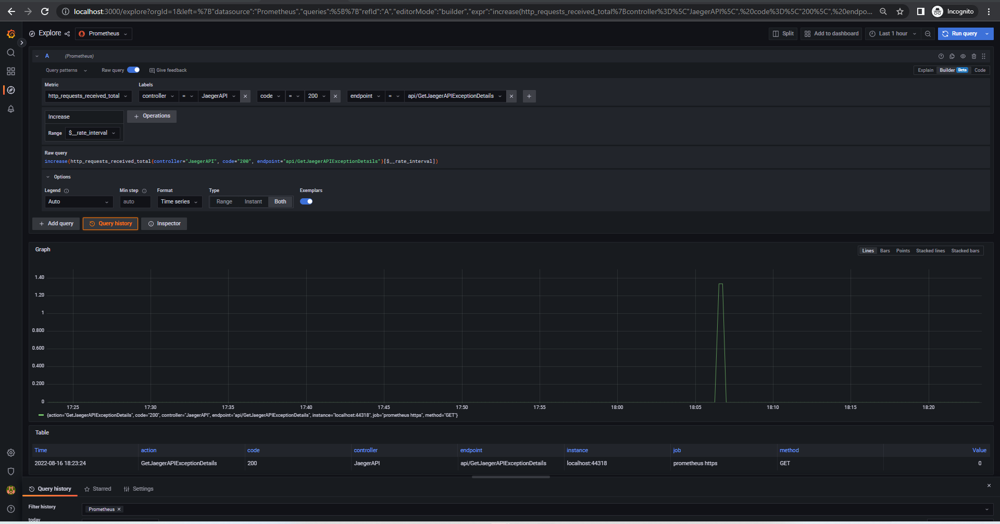

Advance Logging in .NET Core 6
In this article we learn about advance logging following are the topics will cover:
- Jaeger
- Prometheus
- Comparing Jaeger and Prometheus.
- Open Telemetry
- Comparing Open Telemetry and Prometheus
- Grafana
- Comparing Grafana and Prometheus
- Setup Jaeger, Prometheus, Grafana.
- Setup on local environment.
Microservices create stand-alone, distributed, and asynchronous services that site reliability engineers need to monitor to see if an application failed on deployment or behaved unexpectedly.
Monitoring is the superpower that helps you observe your system’s health, creates reliability, and ensures your users are getting the best application experience possible. In monitoring, you look at infrastructure and track/mitigate problems, like high resource usage, high latency, and downtime in real time; and it helps you to be proactive with your infrastructure.
Jaeger
Jaeger is used for monitoring and troubleshooting microservices-based distributed systems, including
- Distributed context propagation
- Distributed transaction monitoring
- Root cause analysis
- Service dependency analysis
- Performance / latency optimization
Prometheus
An open-source monitoring system with a dimensional data model, flexible query language, efficient time series database and modern alerting approach.
- Prometheus is TSDB
- Prometheus is TSDB, Time Series Database. A TSDB is a database optimized for time stamped or time series data
- Prometheus is Pull based tool
- Prometheus expects to retrieve metrics via HTTP calls done to certain endpoints that are defined in Prometheus configuration
- Centralized control
- In built Alerting facility
- Once we have enough data, we must have to analyze it, visualize it and send alerts to respective members or team. So alerting is one of the important components in monitoring system
- Easy for monitoring teams
- PromQL
- Prometheus provides a functional query language called PromQL (Prometheus Query Language) that lets the user select and aggregate time series data in real time. PromQL is fast simple query language.
- Integration with Grafana
Comparing Jaeger and Prometheus
The major difference between the two is that Jaeger is specifically meant for distributed tracing, and Prometheus is specifically meant for monitoring metrics.
OpenTelemetry
OpenTelemetry is a collection of tools, APIs, and SDKs. Use it to instrument, generate, collect, and export telemetry data (metrics, logs, and traces) to help you analyze your software’s performance and behavior.
Comparing OpenTelemetry and Prometheus
- OpenTelemetry helps you to instrument code to generate telemetry data. In comparison, Prometheus is a metrics monitoring tool. OpenTelemetry client libraries provide a one-stop solution to generate logs, metrics, and traces. Prometheus can only generate metrics.
- Prometheus comes with a visualization layer, although basic. OpenTelemetry does not aim to provide a visualization layer, and the data collected with OpenTelemetry can be sent to any backend analysis tool.
Grafana
Grafana is a multi-platform open-source analytics and interactive visualization web application. It provides charts, graphs, and alerts for the web when connected to supported data sources.
- Customizable dashboards are feature-rich and can be configured to display data from a wide range of databases using visualization tools such as heatmaps, histograms, and charts. The platform is flexible and easy to use.
- Native support of a broad range of databases. Grafana is open source and provides the ability to create custom plugins based on project requirements.
- Grafana is the ideal solution for dashboard development and visualization because cloud systems like AWS have built-in data collection infrastructure.
- You can host it on-premises or on any cloud platform you choose.
Comparing Grafana and Prometheus
- Visualizations and Editing of Data
- Grafana being an open-source data visualization tool is rich in features related to visualization of time-series metrics.
- Prometheus, on the other hand, has to be dependent on console templates for visualization. It can graph data but has to be dependent on Grafana for full frameworks like queries and dashboards.
- Memory Utilization
- Grafana is only a visualization tool. It is not competent at handling data storage.
- Prometheus takes an edge over here. It excels in time-series data storage and organizes them with essential value tagging.
Setup Jaeger, Prometheus, Grafana
- If you setup in existing project, then
- Open folder Logging read _instrunction.txt follow the step.
Setup Code
- Below NuGet package require for the setup
OpenTelemetry.Exporter.Jaeger
OpenTelemetry.Extensions.Hosting
OpenTelemetry.Instrumentation.AspNetCore
OpenTelemetry.Instrumentation.Http
OpenTelemetry.Instrumentation.SqlClient
prometheus-net.AspNetCore
- Create Middleware folder and create a class OpenTelemetryEnrich // This block is for jaeger
public class OpenTelemetryEnrich
{
internal static void AspNetCoreInstrumentationEnrich(Activity activity, string eventName, object rawObject)
{
if (rawObject is Exception exception)
{
if (exception != null) // We can add custom exception details
{
activity.SetTag("stackTracedetails", exception.StackTrace);
activity.SetTag("exception", exception.ToString());
}
}
if (rawObject is HttpRequest request) // We can add custom http request details
{
var context = request.HttpContext;
activity.AddTag("http.client_ip", context.Connection.RemoteIpAddress);
activity.AddTag("http.request_content_length", request.ContentLength);
activity.AddTag("http.request_content_type", request.ContentType);
}
}
internal static void SqlClientInstrumentationEnrich(Activity activity, string eventName, object rawObject)
{
if (rawObject is SqlCommand cmd) // We can add custom SQL details
{
activity.SetTag("CommandText", cmd.CommandText);
activity.SetTag("Parameters", string.Join(",", cmd.Parameters.Cast<SqlParameter>().ToList().Select(p => $"{p.ParameterName}={p.Value}")));
activity.SetTag("CommandType", cmd.CommandType);
activity.SetTag("Site", cmd.Site);
}
}
}
- Copy below code and paste into startup before Build() // This block is for jaeger
var serviceName = "JaegerAPIServices";
var serviceVersion = "1.0.0";
builder.Services.AddOpenTelemetryTracing((builder) => builder
.AddSource(serviceName)
.SetResourceBuilder(
ResourceBuilder.CreateDefault()
.AddService(serviceName: serviceName, serviceVersion: serviceVersion))
.AddAspNetCoreInstrumentation((options) =>{options.Enrich = OpenTelemetryEnrich.AspNetCoreInstrumentationEnrich;})
.AddHttpClientInstrumentation()
.AddSqlClientInstrumentation((options) =>{options.Enrich = OpenTelemetryEnrich.SqlClientInstrumentationEnrich;})
.AddJaegerExporter()
);
- Copy below code and paster before Run() // This block is require for prometheus
app.MapMetrics(); // This will export matrics data which require for prometheus
app.UseHttpMetrics(); // This will export http metrics e.g. Https request ,response etc.
app.UseMetricServer();
- Add custom trace
[HttpGet]
[Route("GetJaegerAPIExceptionDetails")]
public IEnumerable<JaegerAPI> GetJaegerAPIExceptionDetails()
{
IEnumerable<JaegerAPI> obj = new List<JaegerAPI>();
// example of adding custom trace and messages
var MyActivitySource = new ActivitySource("JaegerAPIServices"); // Use same services used in startup class
using var activity = MyActivitySource.StartActivity("Api called first step"); // We can create activity
ActivityEvent activityEvent = new ActivityEvent("NewEventCreated");// We can create event
activity.AddEvent(activityEvent);
activity.SetTag("first SetTag call", "test purpose tag");
try
{
obj = _jaegerServiceInterface.GetJaegerAPIIEnumerableData(Summaries);
using var activityTwo = MyActivitySource.StartActivity("Api called second step"); // We can add multiple activity
activityTwo.SetTag("second SetTag call", "test purpose tag");
if (obj != null)
{
throw new Exception("Test Exception thrown ");
}
}
catch (Exception)
{
throw;
}
return obj;
}
References
Jaeger Home page 1.0

Jaeger Exception Trace 1.1
Jaeger each SQL dependencies & Response Time 1.2
Jaeger SQL Exception with dependencies 1.3
Jaeger Custom Trace 1.4
Prometheus Target 2.1 (multiple metrics enable app listed here)
Prometheus Metrics Dashboard with PROMQL Query 2.2
Grafana Dashboard 3.1

Grafana Dashboard Details 3.2
Grafana Jaeger Trace Details 3.3

Grafana Analysis Tool & Response Time 3.4
Grafana Created Alert Rule 3.5
Grafana Contact Person Add for Notification 3.6
Grafana Set Permission for Notification 3.7
Grafana Notification Detail 3.8
Conclusion
You should now understand how beneficial monitoring is for your infrastructure. Microservices bring performance at the cost of complexity, and monitoring helps you manage the complexity efficiently.
The scraping capability of Prometheus and tracing of Jaeger make them a perfect fit for your engineering team. Using both these tools together helps make your infrastructure resilient, but the usages will depend on your needs.
Prometheus and Grafana are both built for time-series data. Prometheus excels in metric data collection, whereas Grafana champions metric visualizations. Both tools are open source, free and have vibrant communities of open source developers supporting their development.
Grafana, unlike Prometheus, provides maximum options of breaking down data into an understandable form.